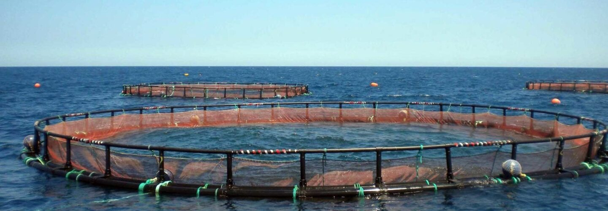

Aquaculture today is
manual, risky, and
impossible to scale.
Farmers physically manage buoyancy, depth, and crop exposure by hand. Weather, waves, predators, and tides can destroy entire harvests overnight. Scaling offshore? Nearly impossible without automation.

AutoDive® automates what farmers do manually.
Our patented Depth Control Engine reads weather, wave, and water data — then adjusts your crop depth automatically. Monitor and control from shore, your phone, or your kitchen table. No boat trips. No guesswork.
Autonomous Depth Control
Adjusts cage depth based on real ocean conditions
Protect Crops
Submerges crops below wave damage automatically
Reduce Labor
Fewer boat trips, fewer crew, lower overhead
Reduces Predation
Less surface exposure, better growth
Scale Offshore
Move into deeper, more productive waters
Cut Costs
Lower farm-to-market expenses
Increase Yields
Optimize feeding and growth cycles
Improve Safety
Keeps crew on shore, out of rough seas